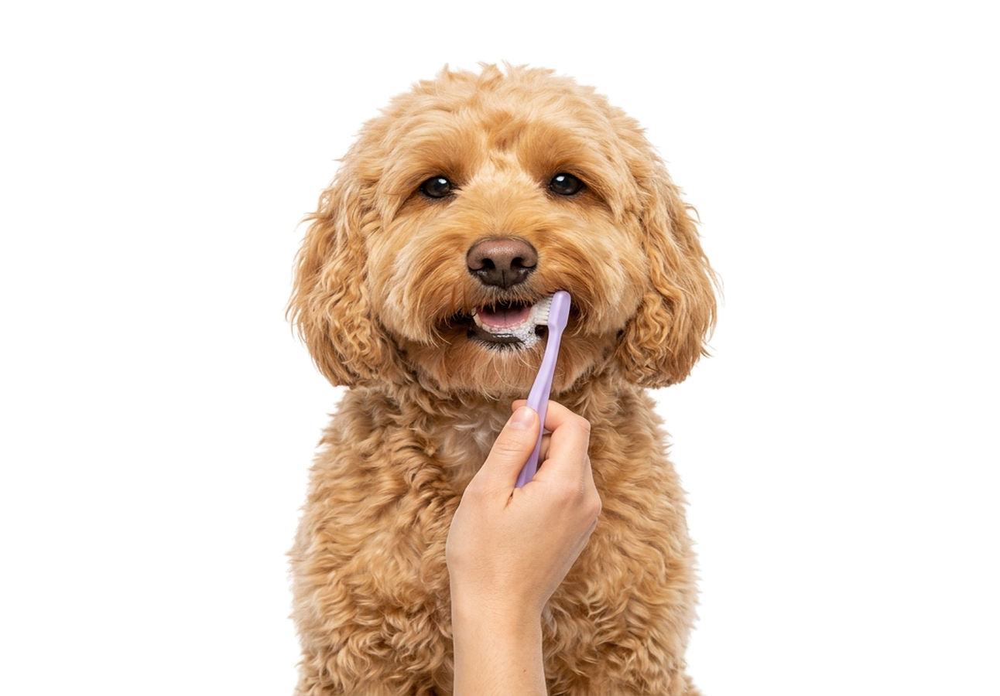
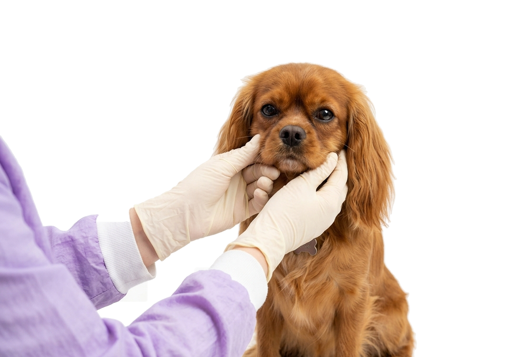

From a quick freshen-up bath and blow-dry to a full tailored haircut, every appointment at Waggin with GG starts with a chat about your dog’s coat and comfort.
A gentle warm wash with dog-safe shampoo, fluff blow-dry and thorough brush-out at Waggin with GG to keep your dog’s coat clean, soft and fresh between haircuts. (From £25)


A complete bath, blow-dry, brush-out and custom haircut or breed trim, with the exact length and finish agreed with Georgia before the groom begins. (From £50)


A careful, stress-free nail clip at Waggin with GG for dogs whose nails are getting a little long between grooming appointments, helping support comfortable posture and healthy paws. (From £10)


A gentle brush using dog-friendly toothpaste to help freshen breath and support oral hygiene, available as an easy add-on to any grooming appointment at Waggin with GG. (£5 with a groom)


A gentle ear check and cleanse using soothing, dog-safe ear solution to remove wax and debris and keep your dog’s ears clean, fresh and comfortable.


Careful trimming around the eyes and muzzle with rounded safety scissors, plus a gentle tear-stain wipe so your dog can see clearly and stay neat between full grooms.


Thorough undercoat brushing and conditioning treatment at Waggin with GG to lift loose dead hair, reduce shedding at home and promote a healthy, breathable coat.


A neat, hygienic tidy of the hair between the paw pads and around sanitary areas to prevent matting, improve grip on floors and keep your dog clean on walks.